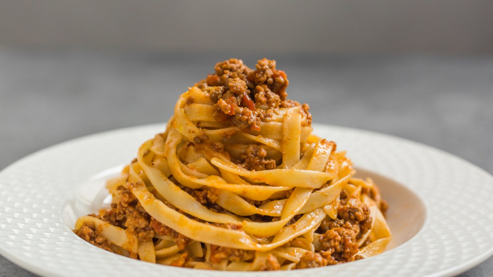

Tagliatelle al Ragù

Description:
Tagliatelle with ragù are one of the most loved first courses in Italian cuisine. Widespread throughout the country and traditionally associated with Emilia-Romagna and the city of Bologna.
To make tagliatelle al ragù we need some time, because the sauce needs to cook for a couple of hours. But the ragù sauce recipe is still very easy and within everyone's reach.
Ingredients:
- 250g tagliatelle
- 150g bacon
- 500g ground beef
- 200ml red wine
- 400ml tomato sauce
- 200ml milk
- a celery stalk
- a carrot
- an onion
- extra vergin olive oil
- salt
- pepper
Steps:
- First, brown the bacon alone in a pan for a few minutes.
- Add a little oil, the chopped celery, onion and carrot and fry.
- When the vegetables have wilted, add the minced meat and brown for 5 minutes. Then we add the red wine and continue cooking for another 5 minutes.
- We also pour the tomato puree into the pan and season with salt and pepper. Cook the ragù over a very low heat with the lid on for an hour and a half.
- Add the milk, mix and continue cooking for another 5 minutes, or even 10 if needed.
- When the ragù is ready, creamy and homogeneous, boil the tagliatelle in boiling salted water, then drain them and put them in the pot with the ragù.
- Let's plate and serve our tagliatelle with ragù nice and hot!